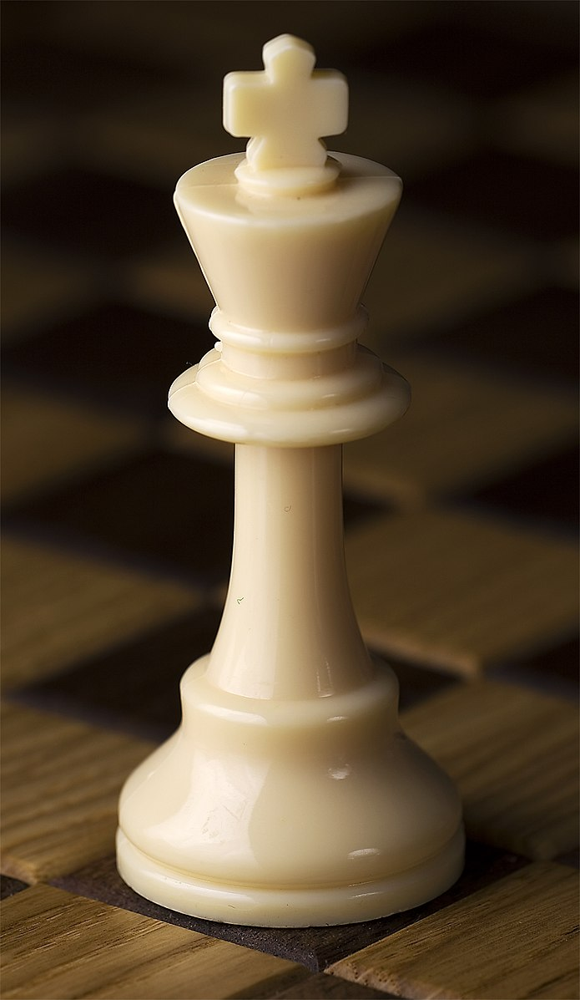

Educational benefits of chess
Chess is one of the most popular board games across the globe. Not only it has proven to be a great activity for passing time but there are numerous educational benefits associated with this as well, which makes it suitable for people of all ages, including children.
It improves focus and concentration
A major factor that helps a student get high grades are concentration, focus, and diligence and the same can be improved by playing chess. The energy a player has is channelled into focus when they are playing a game of chess. Thus, it is known to improve focus and concentration, which helps the students to enhance their performance in studies.
It helps the brain to exercise
Similar to other muscles of our body, our brain also needs exercise to function properly since it works like one. Health experts believe that people who do not indulge in brain-exercise activities such as chess etc., their brain tends to lose strength and power. Furthermore, a study has also been conducted on this subject, which revealed that people who do not indulge in mind-stretching activities are more at risk of developing certain neurological disorders such as dementia or Alzheimer’s.
A strengthened brain helps an individual to put more focus on studies and grasp the lesson in a better way. This is why the brain-stretching feature of chess is known as one of its major educational benefits. It also helps students to perform better in studies since chess strengthens both sides of the brain. The result is enhanced focus and concentration.
Discipline and self-reliance
When you sit down at a chess board, you are on your own. Sitting across from an opponent it is one of the purest forms of competition available. You are solely responsible for the outcome of the game and you learn important lessons such as the fact that thoughtless actions have consequences.
It improves creativity
Playing chess helps to improve one’s creative side. It has been proven in many studies that it activates the right side of the brain, which is responsible for making a person creative.
It increases the memory
One of the most well-known and the prominent educational benefits of playing chess is that it helps to increase the memory. A chess player needs to be aware of the moves that their opponents have already made or the ones that have worked for you in the previous games. This enhances their memory, which comes in handy for them in memorizing their lessons as well.
It teaches planning and problem-solving skills
Playing chess requires constant planning and problem-solving skills from a player to outdo their opponent. These skills are inevitable for students who want to perform well in their exams. When an individual regularly plays chess, these skills are instilled in them and help them to improve their performance in studies.

